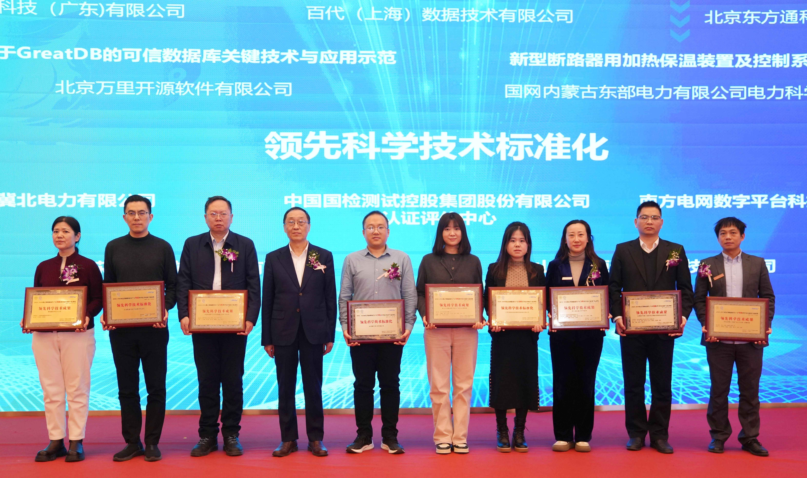
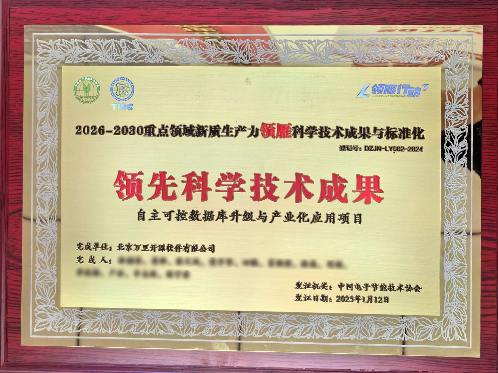
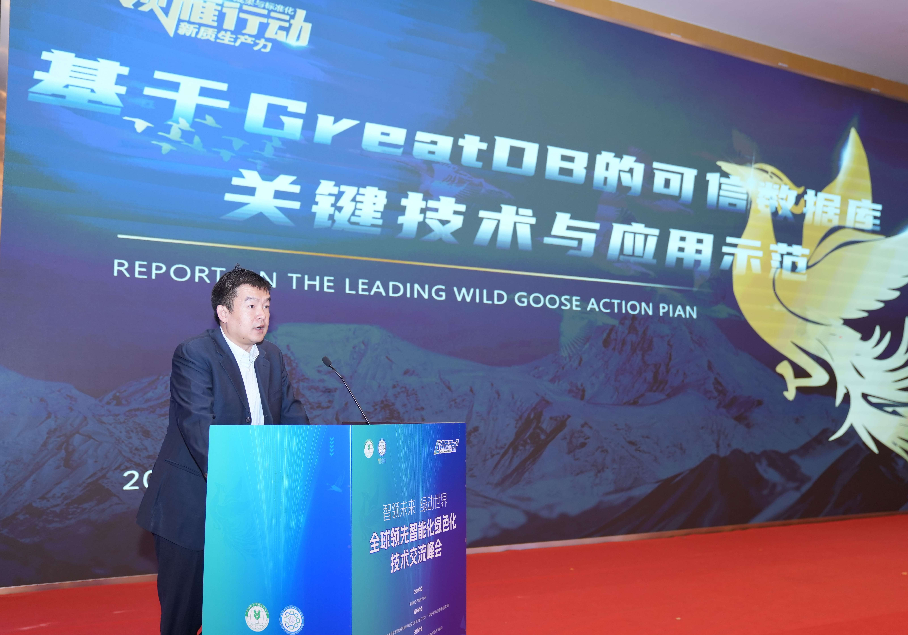

荣誉 | 引领国产数据库技术突破 万里数据库获评“领雁行动”领先科学技术成果
近日，以“智领未来 绿动世界”为主题的“全球领先智能化绿色化技术”交流峰会在北京成功举办。此次峰会
汇聚工业和信息化部、国家卫生健康委、西北工业大学、国家计算机网络应急协调中心等智能化和绿色化领域
政府代表、行业协会、科研机构及青年专家，共同探讨智算+基础研究、金融、电网、制造业、医疗、绿色
低碳等领域的技术创新与产业转型方向。
万里数据库凭借扎实的技术实力与创新实践能力入选“领先科学技术成果”。

领雁行动揭晓 获领先技术成果评价
峰会上，“重点领域领先科学技术成果与标准化”征集活动（以下简称“领雁行动”）榜单正式发布。该榜单
历时数月，严格按照国家级科学技术成果、标准立项程序展开评审，于今年1月正式公布评选结果。

万里数据库凭借“自主可控数据库升级与产业化应用项目”，在激烈角逐中斩获“领先科学技术成果”评价。
该项目中，万里安全数据库软件GreatDB是一款安全、可控的企业级关系型数据库产品，支持多种灵活稳定
的金融级高可用方案，可根据用户需求采用集中式或分布式部署。不仅提供完备的事务支持，适用于要求
苛刻的在线事务处理(OLTP)应用场景，还具备轻量级实时数据分析处理(OLAP)能力。
GreatDB完全兼容SQL92、SQL99、SQL2003、SQL2016等国际标准，支持MySQL全部语法及大部分
常用Oracle语法，自带丰富的生态组件，支持多种 CPU芯片架构和 Linux系统，拥有众多金融级安全特性。
国产数据库的技术创新与未来机遇
作为科安工委会（TISC）前十名优秀会员代表，万里数据库技术专家现场发表主题演讲《基于GreatDB的
可信数据库关键技术与应用示范》。
他指出，MySQL作为全球流行度最高的开源数据库，在全球拥有广泛的市占率。在国家信创相关政策引领下，
自主研发的国产数据库GreatDB不仅100%兼容MySQL，还在锁优化、并行处理等多项功能特性上优于MySQL
，可完成MySQL的一键平滑迁移，实现应用代码0改造。因此，GreatDB也被广泛应用于国有大型银行、市级
远程心电诊断系统等核心业务场景中，是MySQL替代的最优选择。

“领雁行动”旨在表彰绿色化、智能化领域取得突破的企业与技术成果，推动技术创新与标准化结合。万里数据
库获此殊荣，彰显了公司的技术实力与行业影响力。
未来，万里数据库将以技术创新为驱动力，持续推动国产数据库与智能化技术在更多领域的应用，与各方携手
共建高质量发展的产业生态，为绿色计算与智能化产业注入更多活力。